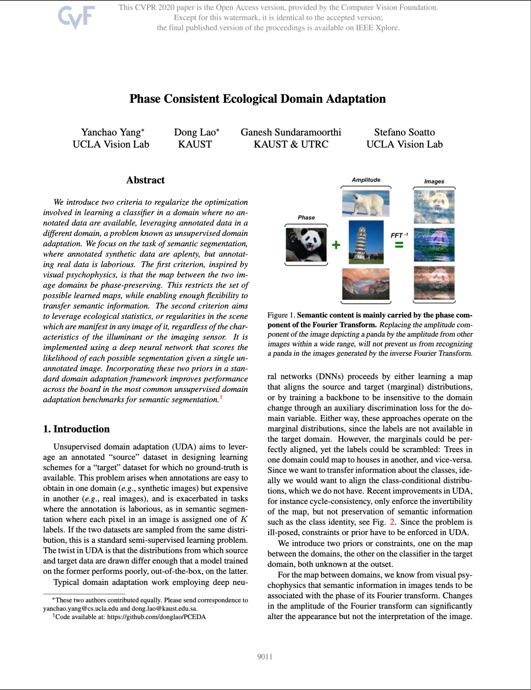

Publications

Phase Consistent Ecological Domain Adaptation
Yanchao Yang, Dong Lao, Ganesh Sundaramoorthi, Stefano Soatto
This work proposes two new criteria for unsupervised domain adaptation in semantic segmentation: a phase-preserving map between domains and leveraging ecological scene statistics. Incorporating these priors into a standard framework significantly improves segmentation performance on common benchmarks without requiring annotated data in the target domain.
View PDF
WorDepth: Variational Language Prior for Monocular Depth Estimation
Ziyao Zeng, Daniel Wang, Fengyu Yang, Hyoungseob Park, Stefano Soatto, Dong Lao, Alex Wong
Monocular 3D reconstruction from a single image and from text are both inherently ill-posed problems, particularly due to scale and spatial ambiguities; we explore whether combining these modalities can enable metric-scaled depth estimation. We introduce a variational framework that encodes text as a distributional prior and conditions image-based sampling to predict depth maps, demonstrating consistent performance improvements on NYUv2 and KITTI.
View PDF
Surprising Instabilities in Training Deep Networks and a Theoretical Analysis
Yuxin Sun, Dong Lao, Ganesh Sundaramoorthi, Anthony Yezzi
We show that training deep neural networks with SGD can be numerically unstable, where tiny floating-point errors may grow and cause noticeable differences in test accuracy. Using a PDE-based analysis of a simple convolutional network, we identify when these instabilities occur and highlight how factors like learning rate and weight decay can help maintain stable training.
View PDF
RSA: Resolving Scale Ambiguities in Monocular Depth Estimators through Language Descriptions
Ziyao Zeng, Yangchao Wu, Hyoungseob Park, Daniel Wang, Fengyu Yang, Stefano Soatto, Dong Lao, Byung-Woo Hong, Alex Wong
We propose RSA, a method for metric-scale monocular depth estimation that leverages language descriptions to resolve scale ambiguity in single-image depth prediction. By predicting a global linear transformation from text captions, RSA converts relative depth maps into metric scale and demonstrates improved alignment performance across indoor and outdoor datasets, including strong zero-shot generalization.
View PDF
AugUndo: Scaling Up Augmentations for Monocular Depth Completion and Estimation
Yangchao Wu, Tian Yu Liu, Hyoungseob Park, Stefano Soatto, Dong Lao & Alex Wong
We present a method for unsupervised depth completion and estimation that enables a broader range of geometric data augmentations without degrading reconstruction quality. By “undoing” transformations on predicted depth maps and computing losses in the original reference frame, our approach avoids common augmentation artifacts and improves performance and generalization across indoor and outdoor datasets.
View PDF
On the Viability of Monocular Depth Pre-training for Semantic Segmentation
Dong Lao, Fengyu Yang, Daniel Wang, Hyoungseob Park, Samuel Lu, Alex Wong & Stefano Soatto
This work investigates whether pre-training on geometric tasks can transfer to semantic tasks, using monocular depth prediction to prime object-level understanding for semantic segmentation under various training conditions. Results show that depth-based pre-training consistently improves performance over standard baselines, while optical flow is less effective, suggesting that learning latent scene structure—rather than raw temporal signals—plays a key role in enabling semantic inference.
View PDF
A PDE-based Explanation of Extreme Numerical Sensitivities and Edge of Stability in Training Neural Networks
Yuxin Sun, Dong Lao, Anthony Yezzi, Ganesh Sundaramoorthi
We identify restrained numerical instabilities in deep networks trained with stochastic gradient descent (SGD), where tiny floating-point errors can be amplified and lead to significant variance in test accuracy comparable to stochastic effects. Using a PDE-based analysis of CNN optimization, we show these instabilities are localized and persist near the Edge of Stability, providing new insights into how learning rate, weight decay, and network complexity influence stable training dynamics.
View PDF